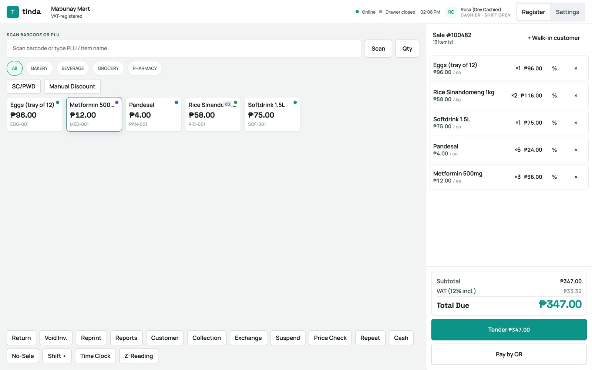
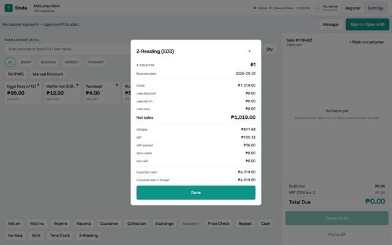
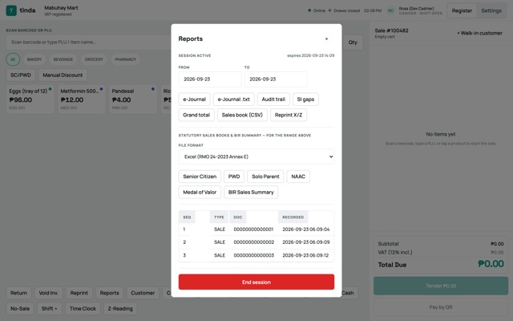
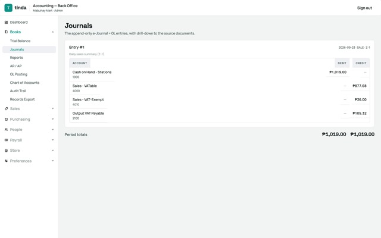
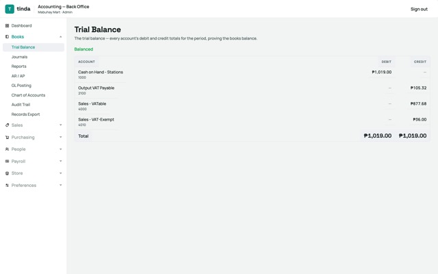
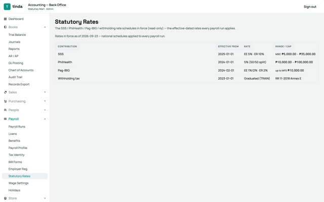

Tinda
Point of sale and back office for Philippine retail
An offline-first POS, general ledger, inventory, purchasing and payroll in one codebase. It is designed to the Philippine tax authority's (BIR's) technical requirements for accredited POS software. It is not yet accredited. Built over about three months.












Screens from a local demo run with a fictional store and seeded data. Click any image for full size.
- Tamper-evident books. Journals are append-only and hash-chained. Database triggers reject UPDATE and DELETE, and a correction is a new adjustment document. The chain's tail lock is tested with real concurrent writers against real Postgres: parallel writes, rollback without a numbering gap, and deadlock-free lock ordering.
- Two pure statutory rules engines. One covers VAT, senior/PWD discounts and the Z-reading cross-check. The other covers SSS, PhilHealth, Pag-IBIG and withholding tax, plus the 1601-C, 2316 and Alphalist forms. Every rule cites its issuance and effective date, and the agencies' own worked examples replay as golden fixtures.
- Offline-first by design. An in-store server with an optional mirror on each till. Invoice numbers are gapless and come from reclaimable blocks the server issues. The transmission outbox is written in the same transaction, and sale, payment, adjustment, AR/AP and reading endpoints take an idempotency key.
- The architecture is enforced by tests.
core → db = 0: a CI test fails the build if the core imports the database layer. The same codebase ships as an on-prem appliance, a cloud deployment and a Tauri desktop register that drives USB receipt printers natively.
- ~5,100
- tests
- 90–96%
- mutation score (domain, tax, core; scoped)
- 34
- architecture decision records
- 175
- hand-written SQL migrations
- TypeScript (strict)
- Rust
- Tauri 2
- React 18
- Vite
- NestJS 11
- Fastify
- zod
- PostgreSQL 16
- Drizzle
- pglite
- Vitest
- Playwright
- Testcontainers
- Stryker
- pnpm monorepo
- GitHub Actions
- Docker Compose